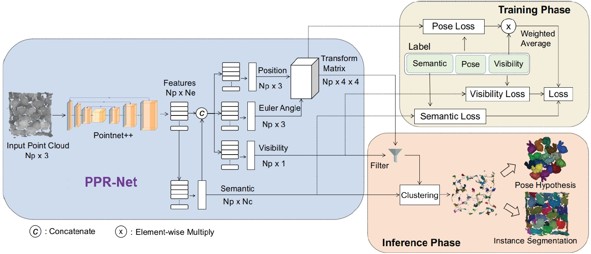

Associate Professor, Ph.D.
Tsinghua University, SIGS, Mphil/Ph.D. Supervisor--Director, Joint Research Center of Intelligent Service Robotic Technology;
--Co-founder & Chief Scientist, Fuwei Intelligent Tech. Co. Ltd (start-up);
--Technical advisor, Pudu Tech. Co. Ltd (Unicorn); Email: zenglong@sz.tsinghua.edu.cn
[中文主页] [Google Scholar] [Github]
I am an tenure-tracked PI at the Information and Data Institute, SIGs, Tsinghua. I obtained my Ph.D. degree from Hong Kong University of Sci. and Tech.. My research interest is Industrial Embodied Intelligence, to solve challenging problems in both design, manufacturing, and robotic delivery scenarios. We study new deep learning methods exploring the unique characteristics of industrial data and mainly apply in Embodied Intelligent Industrial Robotics (EIIR, e.g.Flexible Assembly), Embodied Intelligent Service Robotics (EISR), Intelligent CAD (e.g. Sketch-based Engineering Product Modeling).
Our academic results are partially industrialized and verified by industrial products. I am the Co-founder & Chief Scientist in Fuwei Intelligent Tech. Co. Ltd (EIIR start-up company), the Technical advisor in Shenzhen Pudu Tech. Co. Ltd (a Unicorn EISR company)
For Prospective Students: I am actively looking for highly self-motivated Ph.D., Master students, Post-doctor, and Research Assistants (undergraduate/graduate level). Please email me with your CV and transcripts if you are interested in our research.
News
Representative Publications
Full paper list at Google Scholar.
*,# indicates corresponding and equal contribution author
2025

2DGS-Room: Seed-Guided 2D Gaussian Splatting with Geometric Constrains for High-Fidelity Indoor Scene Reconstruction
Wanting Zhang#, Haodong Xiang, Zhichao Liao, Xiansong Lai, Xinghui Li*, Long Zeng*.
Submitted to IEEE/RSJ IROS 2025.
Contribution:Recent advancements in 3D Gaussian Splatting have improved novel view synthesis with accelerated processing but have yet to deliver comparable performance in surface reconstruction.
In this paper, we introduce 2DGS-Room, a novel method leveraging 2D Gaussian Splatting for high-fidelity indoor scene reconstruction. Specifically, we employ a seed-guided mechanism to control the distribution of 2D Gaussians,
with the density of seed points dynamically optimized through adaptive growth and pruning mechanisms. To further improve geometric accuracy, we incorporate monocular depth and normal priors to provide constraints for details and textureless regions respectively.
Extensive experiments on ScanNet and ScanNet++ datasets demonstrate that our method achieves state-of-the-art performance in indoor scene reconstruction..
GaussianRoom: Improving 3D Gaussian Splatting with SDF Guidance and Monocular Cues for Indoor Scene Reconstruction
Haodong Xiang#, Xinghui Li#, Kai Cheng#, Xiansong Lai, Wanting Zhang, Zhichao Liao, Long Zeng*, Xueping Liu*.
IEEE Conference Robotic and Automation (ICRA), 2025.
Contribution: When 3D Gaussian Splatting(3DGS) is applied to indoor scenes with a significant number of textureless areas, 3DGS yields incomplete and noisy reconstruction results
due to the poor initialization of the point cloud and under-constrained optimization. Inspired by the continuity of signed distance field (SDF), which naturally has advantages in modeling surfaces,
we present a unified optimizing framework integrating neural SDF with 3DGS.This framework incorporates 3DGS, a learnable neural SDF field, and normal/edge priors.
Extensive experiments in ScanNet and ScanNet++ show that our method achieves state-of-the-art performance in both surface reconstruction and novel view synthesis.
2024

Reconfigurable Flexible Assembly Model and Its Implementation for Cross-Category Products
Zhaobo Xu#, Chaoran Zhang#, Song Hu#, Pingfa Feng, Long Zeng*.
Journal of Manufacturing Systems (JMS, IF 12.2), 2024.
Contribution:As the production orders are becoming multi-category and small-batch in the era of product personalization,
these require frequent reconfiguration of reconfigurable flexible assembly system for cross-category products (RFAS-CCP).
However, there is no suitable theoretical assembly model and systematic implementation framework. We first propose a five-element assembly model (FAM) for RFAS-CCP,
i.e. product, process, resource, knowledge, and decision. We further reorganize various decision methods into a three-phase systematic implementation framework according to which stage they are used:
design, configuration, and operation phases. Finally, the effectiveness and practicality of the proposed five-element assembly model and three-phase systematic implementation framework are
experimented with a pressure reducing valve product.

Mobile Oriented Large-Scale Indoor Dataset for Dynamic Scene Understanding
Yi-Fan Tang#, Cong Tai#, Fang-Xin Chen#, Wanting Zhang, Tao Zhang, Yongjin Liu, Long Zeng*.
IEEE Conference Robotic and Automation (ICRA), 2024.
Contribution: Most existing robotic datasets capture static scene data and thus are limited in evaluating robots dynamic performance.
To address this, we present a mobile robot oriented large-scale indoor dataset, denoted as THUD (Tsinghua University Dynamic) robotic dataset, for training and
evaluating their dynamic scene understanding algorithms. Our current dataset includes 13 larges-scale dynamic scenarios, 90K image frames, 20M 2D/3D bounding boxes of static and dynamic objects,
camera poses, and IMU.

GRID:Scene-Graph-based Instruction-driven Robotic Task Planning
Zhe Ni#, Xiaoxin Deng#, Cong Tai#, Xinyue Zhu, Qinghongbing Xie, Weihang Huang, Xiang Wu, Long Zeng*.
IEEE/RSJ International Conference on Intelligent Robots and Systems(IROS), 2024.
Contribution:Recent works have shown that Large Language Models (LLMs) can facilitate the grounding of instructions for robotic task planning.
Despite this progress, most existing works have primarily focused on utilizing raw images to aid LLMs in understanding environmental information.
However, this approach not only limits the scope of observation but also typically necessitates extensive multimodal data collection and large-scale models.
In this paper, we propose a novel approach called Graph-based Robotic Instruction Decomposer (GRID). Experiments have shown that our method outperforms GPT-4 by over 25.4%
in subtask accuracy and 43.6% in task accuracy.
Before 2024
PPR-Net++: Accurate 6D pose estimation in stacked scenarios
Long Zeng#, W. J. Lv, Z. K. Dong, Y. J. Liu*.
IEEE Transaction on Automation and Science (JCR Q1), 2021, pp.1-13.
Contribution:The challenge is that the learned network on the training dataset is no longer optimal on the testing dataset.
To address this problem, we propose a pose regression network PPR-Net++. It transforms each scene point into a point in the centroid space, followed by a clustering process and a voting
process. When tested with the public synthetic Sileane dataset, our method is better in all eight objects, where five of them are improved by more than 5% in AP. On IPA real dataset, our method outperforms a large margin by 20%. This lays a solid foundation for robot grasping in industrial scenarios.

PPR-Net: Point-wise Pose Regression Network for Instance Segmentation and 6D Pose Estimation in Bin-picking Scenarios
Z. K. Dong#, S. C. Liu#, T. Zhou#, H. Cheng, Long Zeng*, X. Y. Yu, H. D. Liu.
IEEE/RSJ International Conference on Intelligent Robots and Systems, Macau, China, pp. 1773-1780(IROS), 2019.
Contribution:This paper proposes a simple but novel Point-wise Pose Regression Network (PPR-Net). For each point in the
point cloud, the network regresses a 6D pose of the object instance that the point belongs to. We argue that the regressed poses of points from the same object instance
should be located closely in pose space. PPR-Net outperforms the SOTA by 15% - 41% on benchmark Sileane dataset.
SpiderCNN: Deep Learning on Point Sets with Parameterized Convolutional Filters
Yifan Xu# (My student), Tianqi Fan, Mengye Xu, Long Zeng, Yu Qiao*.
European Conferenceon Computer Vision (ECCV), 2018.
Contribution:It is challenging to apply CNNs to domains lacking a regular underlying structures such as 3D point clouds. Thus, we propose a novel convolutional architecture,
termed SpiderCNN. A new paramerized convolutional operations is designed which can extend CNN from regular grids to irregular point sets.
SOTA performance on ModelNet40, i.e. 92:4%, was achieved (Google scholar citation >1000.).
Projects
1. 2022/11-2025/10, Hand drawn sketch collection and generation algorithm, National Key Research and Development Program "Industrial Software" Key Special Project (Project No. 2022YFB3303101), PI.
2. 2020/01-2023/12, National Natural Science Foundation of China (General Program # 61972220), Sketch-based parametric modeling with large data,PI.
3. 2016/01-2018/12, National Natural Science Foundation of China (Youth Program #61502263), Sketch-based assembly modeling with Intelligent Feature, PI.
4. 2022/01-2024/12, Research on 6D pose estimation method for parameterized parts in industrial stacking scenarios, Guangdong Natural Science General Project (No. 2022A1515011234), PI.
5. 2021/11-2024/11, Tsinghua-Purdue Intelligent Service Robot Technology Joint Research Center, a college level institution, 11.0M, Director.
Courses
《机器学习实践与应用》(Machine Learning: Practices and Applications)
Lectured in every fall semester for graduate students, starting from 2021.
It covers both machine learning methods (such as Linear Model, SVM, Bayesian classifier, Decision tree, and Cluster),
deep learning methods (such as AlexNet, ResNet et al.), and reinforcement learning. They are all organized by the same machine learning framework,
i.e. models, loss functions, and learning algorithms.
《现代CAD方法与技术》(Modern CAD Methodology and Technology)
Lectured in every spring semester for graduate students, starting from 2017.
It covers both traditional CAD methods (such as Bezier, B-spline curves and surface) and AI-based intelligent CAD methods.
Based on the basic process of hand drawn engineering product modeling, this course is divided into several research topics.
In combination with the course project, the theory and classical algorithms of each topic are explained in simple terms,
including the pretreatment of hand drawn sketch, sketch scene understanding, basic theory of B-spline curve and surface, parametric model representation,
hand drawn model acquisition and other sketch modeling technologies, deep learning and its application in hand drawn modeling.
《产品设计与开发》(Product Design and Development)
Lectured in every fall semester for graduate students, starting from 2016.
This course divides the whole process of product design and development into four stages: requirement analysis, conceptual design, detailed design and product exhibition.
The knowledge and methods used in each stage are organized and explained structurally, which is easy for students to master and apply.
The first three stages need to submit a product design progress report for each. In the stage of product exhibition, the course organizes a product design conference and
invites business people to act as judges. Excellent works have the opportunity to transform their achievements directly.
The course emphasizes the organic combination of practice and theory. Students first form a project team and are equipped with project instructors.
Students apply the knowledge and methods learned in class directly to the curriculum project. In the process of project implementation,
students will exercise team spirit, content display skills, demand insight ability, product design and development ability.

《具身智能机器人技术：算法与实践》(Embodied Intelligent Robotics: Algorithms and Practices)
Will come soon, plan to start from 2026 spring.
It covers the basic introduciton of embodied intelligent robotics, world models, perceptions, task planning, and applications.
Students (supervised or joint-supervised)
Current Ph.D. students
徐赵博、程曦
Current master students
Year 3 students: 雷睿祺、李晨睿、倪喆、黄定滔、林恩特、朱晓明、朴烽源、后胜、郑子杰
Year 2 students: 张婉婷、谢庆红冰、黄炜航、李傅豪、张超然、梁华岳、陈琰、李泽顺、杨永波、黄心柔、廖智超
Year 1 students: 周浩、汤彦哲、关智丞、李孟瑶、程航、李在勋、霍文言、阮心仪、王舒园
*,# indicates corresponding and equal contribution author
Projects
Courses